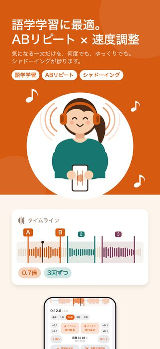
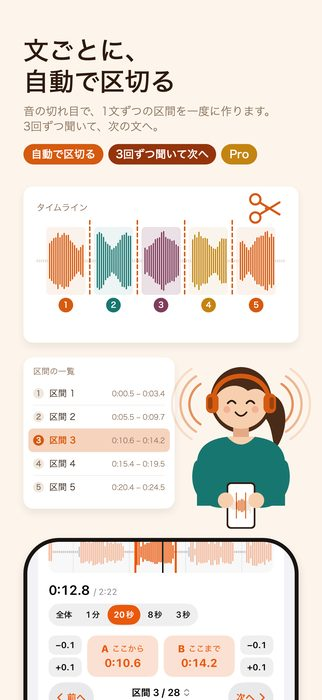
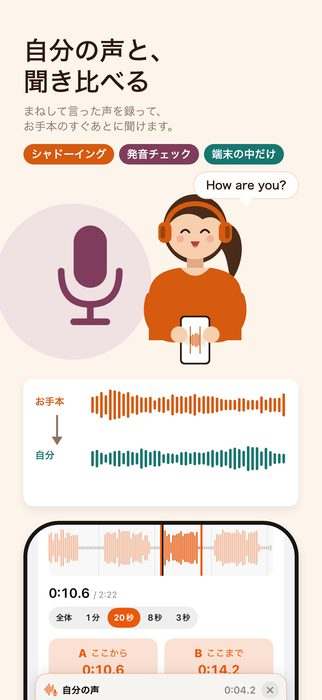
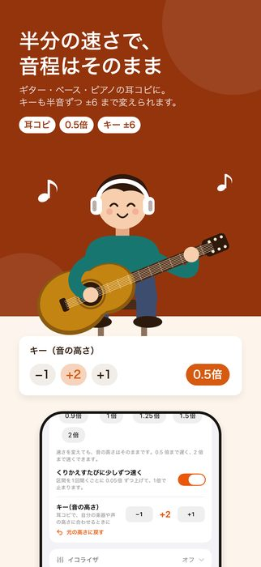
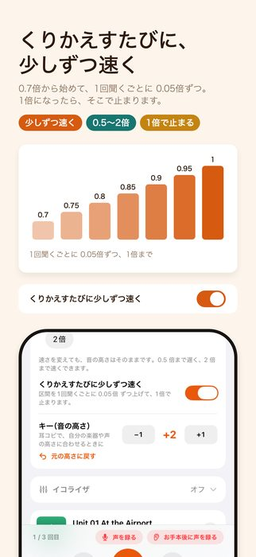
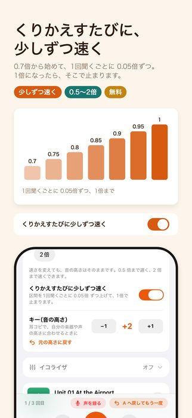
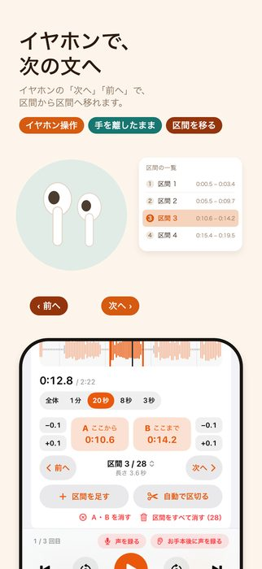
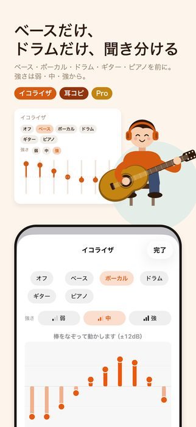
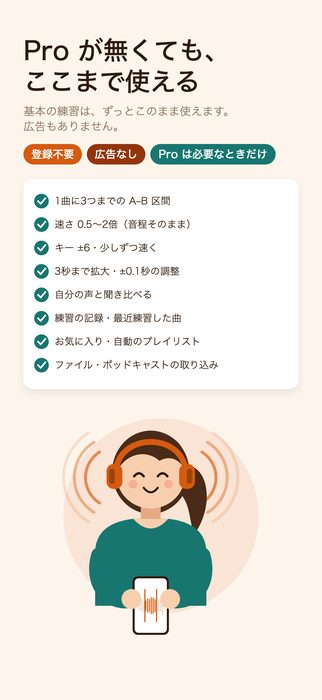
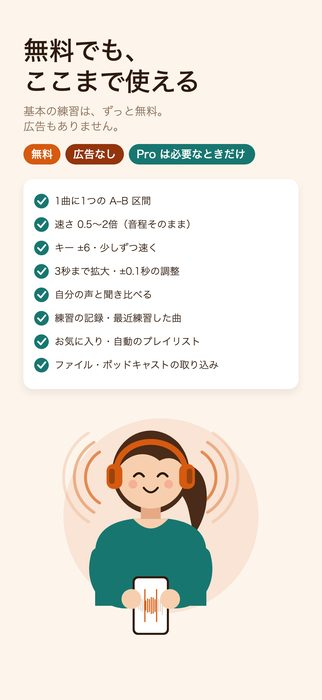

ここからここまでを、何度でも。ゆっくりにしても音の高さは変わらない（iOS 17 以降）










語学——聞き取れなかった一言に A と B を打ち、口が慣れるまでくりかえします。 合間の休みがあるので、聞いたすぐあとに自分でも言ってみられます。シャドーイングも、 発音の確かめも、この1画面で続きます。
耳コピ——速いフレーズを 0.5 倍まで落としても、音程は変わりません。 拾いたいところだけをくりかえし、8秒まで広げれば音の粒まで見えます。
聞き流していて聞き取れない文があったら、下の帯の「いまの文をくりかえす」を押します （ミュージックの再生画面では「この文」）。A・B を押さなくても、その文の前後の無音を見つけて区間にし、 くりかえします。
「自動で区切る」を押すと、音の切れ目を探して1文ずつの区間を一度に作ります。 「何回聞いたら先へ進むか」を3回にすれば、1文を3回聞いて次の文へ。長い教材も、手を離したまま 最後まで進みます。イヤホンの「次へ」「前へ」でも文を移れます。
区間をまねして言った声を録って、「お手本 → 自分」で続けて聞けます。 自分では気づきにくい発音や抑揚の違いが、耳で分かります。録った声は端末の中だけに置きます。
録ると、お手本と自分の波形が同じ目盛りで並びます。言い始めの遅れや長さの違いが目で分かります。 「お手本後に声を録る」にすれば、お手本を聞き終えたところで自動で録りはじめ、自動で止まります。 録る前には 3・2・1 と数えて、まねする文を出します（数えるのは設定で切れます）。
時刻つきのスクリプト（LRC）や字幕（SRT・VTT）を読み込むと、鳴っている文が波形の下に出ます。行ごとに区間を作れて、 区間の名前はその文になります。字幕なら、字幕の終わりがそのまま区間の B になります。 英語の文と日本語訳が並んだ対訳は、訳を文の下に小さく出し、文の右の ≡ で全文を読んで、押した文へ移れます。
時刻の無い教材の本文でも、自動で区切った区間に「文章を貼り付けて区間に割り当てる」と、1文ずつ名前になります。
文を隠して耳だけで聞き取り、書き取ると、聞き落とした語に色が付きます。目のボタンを長押しすれば、 1回目だけ文を隠して、2回目からは文を見ながら聞けます。言えるようになった文には「覚えた」印を付けられます。
A と B が揃うと、すぐにその区間だけをくりかえします。くりかえしの合間には 0.5 秒の休みが入ります（なしにもできます）。
この隙間があるかないかで、使い道が変わります。休みがあれば、聞いたすぐあとに 自分で言ってみる・弾いてみる余白ができます。シャドーイングも、 1フレーズずつの練習も、この間があって初めて成り立ちます。
0.5 倍から 2 倍まで、0.05 刻み。速さを落としても音程は下がりません。 早口の台詞も、速いフレーズも、ついていける速さまで落として聞けます。
「くりかえすたびに少しずつ速く」を入れると、区間を1回聞くごとに 0.05 倍ずつ上がり、1 倍で止まります。 キー（音の高さ）も半音ずつ ±6 まで変えられるので、耳コピで自分の楽器に合わせられます。
波形は、曲の全体・1分・20秒・8秒・3秒に拡大できます（ボタンでも、指2本でつまんでも）。 拡大すると黒い線がまん中に止まり、波形を左右に送って、言い出しや音の頭に 細かく合わせられます。A・B の札を指で動かすことも、±0.1秒 のボタンで詰めることもできます。
今日・この1週間・続けている日数を、設定タブで見られます。ABリピートのタブのいちばん上には 「最近練習した曲」が並び、昨日の続きがひと押しで開けます。
1日の目標（あと何分か・届いたら知らせる）と、曲ごとの練習時間も見られます。毎日の練習のお知らせも出せます。
はじめて開くと、チュートリアルが始まります。8つの英文の練習用の音声で、A・B を付けるところから、 文ごとに区間を作って1文ずつ進むやり方、声を録って聞き比べるやり方まで、矢印の案内で1つずつ覚えられます。
下のタブで「ミュージック」と「ABリピート」を持ち替えられます。ミュージックのほうは ジャケットと曲名と曲送りのボタンが中心の素直な画面で、速さ・シャッフル・おやすみタイマーと、 いまの文をくりかえす「この文」もここから使えます。アルバムの順に次の曲へ進み、 画面を消しても鳴り続け、ロック画面からも操作できます。
「ファイル」App の MP3 を1曲ずつでもフォルダごとでも入れられます。パソコンから 「このiPhone内 > ABループレイ」へ直接入れることもできます。m4a・wav・aiff、 ミュージックライブラリの曲（コピー防止の無いもの）、ポッドキャストのエピソードも入れられます。
動画からも取り込めます。一覧の ＋ の「写真の動画から」や、ほかのアプリからの共有で、 音声だけを取り出して、ほかの曲と同じように練習できます。
ファイルに書き込まれている情報（ID3 タグ）を読んで、アーティスト → アルバム → 曲の 順に並べます。ジャケットも一覧と再生画面に出ます。タグの無いファイルは、入れたフォルダの 名前で分けます。
曲名・アーティスト・アルバム・トラック番号は、アプリの中から書き換えられます。 1曲だけでも、アルバムごと・アーティストごとまとめてでも。書き換えると、「ファイル」App の 中の置き場所も アーティスト名 → アルバム名 の形に移し替えるので、iPhone の中の フォルダと画面の並びが食い違いません。
MP3 のために作りましたが、m4a・wav・aiff なども開けます。一覧の右上の ＋ から、 曲を1本ずつ選ぶか、フォルダごと入れられます。パソコンから「ファイル」App の このiPhone内 > ABループレイ へ直接入れてもかまいません。
Apple Music の曲のように保護（コピー防止）がかかった曲は、ほかのアプリからは開けない決まりに なっていて、使えません。ミュージックライブラリの曲でも、コピー防止の無いものは取り込めます。 ポッドキャストのエピソードも入れられます。
そのために作った機能がそのまま向いています。聞き取れない数秒に A と B を打ち、 0.7 倍くらいまで落として、合間の休みで自分でも言ってみる——この繰り返しが 1画面でできます。
使えます。速いフレーズを半分の速さにしても音程が変わらないので、そのまま 楽器で確かめられます。波形を 8 秒まで拡大すれば、音の立ち上がりが目で見えます。
送られません。曲も録った声も、端末の中だけにあります。 通信するのは、ポッドキャストを探す・落とすときだけです。広告もありません。
曲の取り込み、1曲に3つまでの区間、±0.1秒の調整、速さ、キー、少しずつ速く、合間の休み、くりかえす回数、 自分の声との聞き比べ、練習の記録、お気に入り、プレイリスト2つまで——基本の練習は無料で使えます。
ABループレイ Pro では、自動で区切る・区間を1曲にいくつでも・イコライザ・プレイリスト無制限が使えます。 年額（7日間の無料お試しつき）・6か月（7日間の無料お試しつき）・月額の自動更新サブスクリプションと、 買い切りから選べます。解約は「設定」App →［自分の名前］→「サブスクリプション」からいつでもできます。
使えます。日本語・英語・簡体字中国語・繁体字中国語・韓国語・ドイツ語・ フランス語・スペイン語・ポルトガル語（ブラジル）・イタリア語の10言語に 対応しています。iPhone の言語設定にあわせて切り替わります。
ご質問・ご要望は tatlink002@gmail.com までどうぞ。 プライバシーポリシーもあわせてご覧ください。